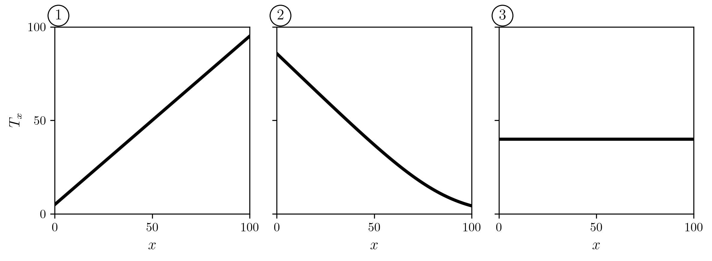
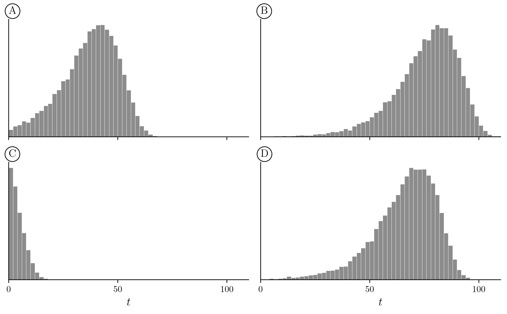
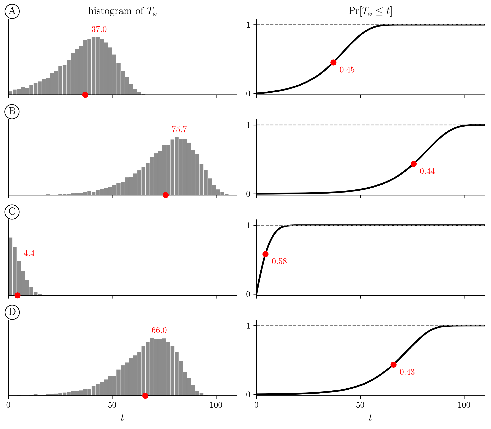
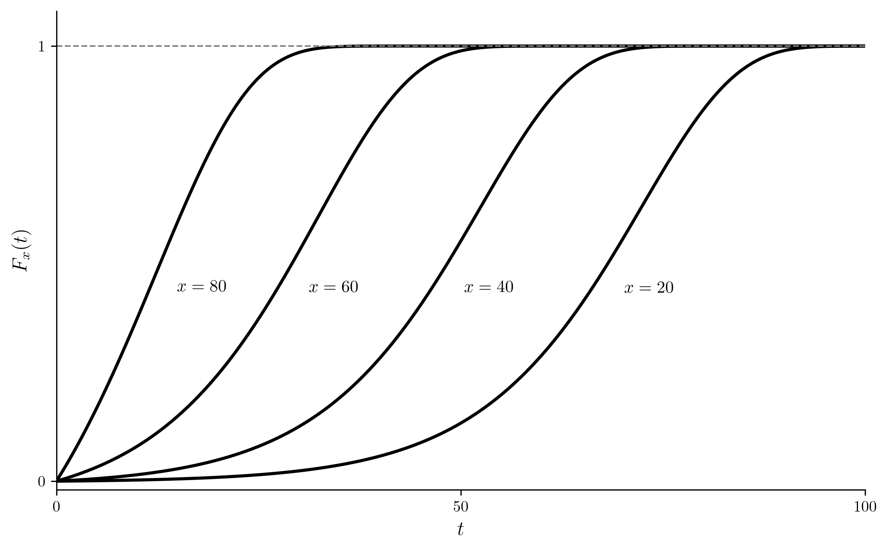
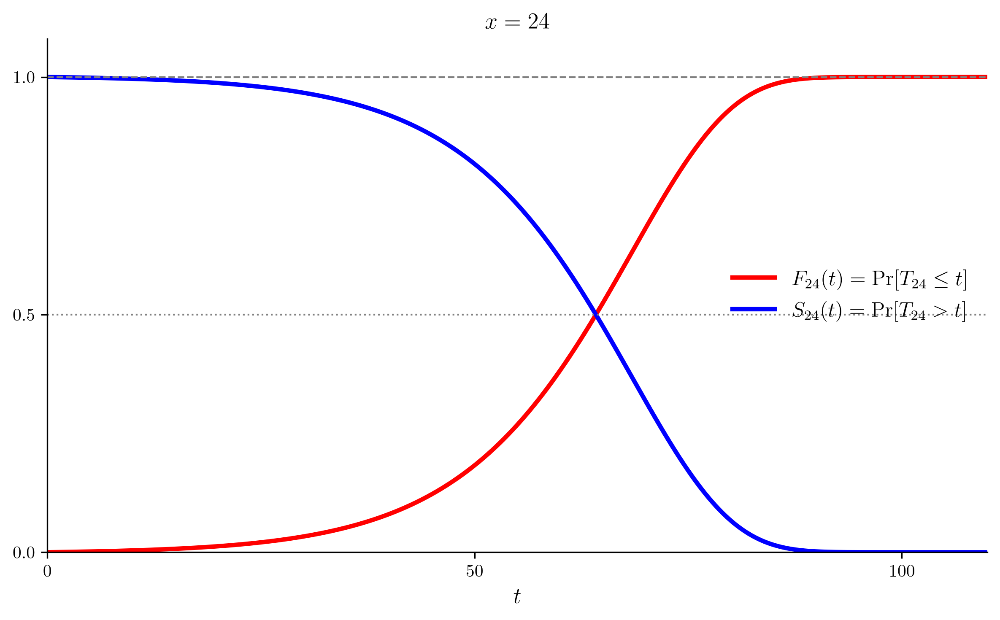

01wk-2: 장래생존기간 확률변수
이 노트는 Dickson, Hardy, and Waters (2020), Actuarial Mathematics for Life Contingent Risks, 3rd ed., Chapter 2 — Survival models 를 따라 구성했다.
1. 강의영상
2. 기호 \((x)\)
- \((x)\) 는 지금 나이가 \(x\) 인 사람 한 명을 가리키는 기호이다.
- 여기서 \(x \ge 0\) 이다.
- \((x)\) 를 「연령 \(x\) 인 생명」이라고 읽으면 된다..
# 예제1 이은지 34세, 미미 30세, 이영지 23세, 안유진 23세이다. 다음 중 옳지 않은 것은?
- 이은지는 \((34)\) 로 나타낼 수 있다.
- 미미는 \((30)\) 으로 나타낼 수 있다.
- 이영지는 \((23)\) 으로 나타낼 수 있다.
- 안유진은 \((24)\) 로 나타낼 수 있다.
(풀이) 답은 4. \((x)\) 의 \(x\) 는 지금 나이다. 안유진은 지금 23세이므로 \((23)\) 이다. 이영지와 나이가 같으므로 두 사람 다 \((23)\) 으로 쓴다.
# 예제2 미미는 30세이다. \((30)\) 은 무엇을 뜻하는가?
- 미미
- 30세인 어떤 한 사람
(풀이) 답은 2. \((x)\) 의 \(x\) 는 나이이지 사람 이름이 아니다. 미미는 \((30)\) 의 한 예일 뿐이다.
- \((x)\) 는 지금 살아 있는 사람이다. 「지금 나이가 \(x\) 」라는 말에 이미 살아 있다는 뜻이 들어 있다. 죽은 사람은 나이가 더 늘지 않기 때문이다.
3. 장래생존기간 \(T_x\)
- \((x)\) 는 \(x\) 보다 큰 어느 나이에서든 죽을 수 있다. \((x)\) 가 앞으로 더 사는 햇수를 \(T_x\) 라 쓰고, 이를 \((x)\) 의 장래생존기간(future lifetime)이라 부른다. \(T_x\) 는 미리 알 수 없는 양이므로 연속확률변수로 모형화한다. 그러면 사망시연령은 \(x + T_x\) 가 되고, 이것도 확률변수다.
- \(x + T_x\) 에서 \(x\) 는 정해진 수이고 \(T_x\) 만 확률변수다. 지금 나이는 알고, 앞으로 살 햇수는 모른다.
- 느낌으로는 \(x\) 와 \(T_x\) 가 서로 깎아먹는 사이다. \(x\) 가 커질수록 \(T_x\) 는 작아지는 쪽이다.
# 가짜예제 \(T_1\) 과 \(T_{100}\) 중 어느 쪽의 값이 더 큰 가?
- \(T_1\)
- \(T_{100}\)
(풀이) 답은 1. 1세 아이는 보통 수십 년을 더 살고, 100세 노인은 몇 년 남지 않았다. 다만 둘 다 확률변수라서 「값」을 바로 비교할 수는 없다. 그래서 이 문제는 잘못낸 문제다. 제대로 비교하려면 분포끼리 비교해야 하고, 그 얘기는 뒤에서 한다.
# 가짜예제 가로축을 \(x\), 세로축을 \(T_x\) 로 놓고 그린다면 어느 그림이 어울리는가?

- 그림 1
- 그림 2
- 그림 3
(풀이) 답은 2. \(x\) 가 커질수록 \(T_x\) 는 작아지는 쪽이다. 다만 \(T_x\) 는 확률변수라서 \(x\) 하나에 값이 하나로 정해지지 않으므로 이런 그래프는 엄밀히는 그릴 수 없다. 그래서 이 문제도 잘못 낸 문제다. 제대로 그리려면 \(x\) 마다 \(T_x\) 의 평균을 찍어야 하고, 그 얘기는 뒤에서 한다.
# 가짜예제 네 히스토그램은 \(x = 10, 20, 50, 100\) 인 \(T_x\) 를 각각 많이 뽑아 그린 것이다. \(x = 100\) 인 것은 어느 것인가?

- A
- B
- C
- D
(풀이) 답은 3이지 않을까? 100세는 앞으로 살 햇수가 몇 년 안 되므로 \(T_{100}\) 은 0 근처에 몰린다.
# 가짜예제 네 줄 A, B, C, D 는 서로 다른 나이 \(x\) 의 \(T_x\) 를 각각 많이 뽑아 그린 것이다. 왼쪽은 \(T_x\) 의 히스토그램(뽑은 값이 \(t\) 근처에 떨어진 개수), 오른쪽은 \(\Pr[T_x \le t]\) 의 그래프다. 빨간 점은 \(T_x\) 의 평균이다. 나이 \(x\) 가 적은 것부터 순서대로 나열하면?

- B, D, A, C
- C, A, D, B
- A, B, C, D
- B, A, D, C
(풀이) 답은 1이 아닐까?
4. 분포함수 \(F_x\) 와 생존함수 \(S_x\)
- \(F_x\) 를 \(T_x\) 의 분포함수라 하자. 즉 \(F_x(t) = \Pr[T_x \le t]\) 이다. 우리는 \(F_x\) 를 연령 \(x\) 로부터의 생애분포(lifetime distribution)라 부른다.
- \(t\) 가 커질수록 \(F_x(t)\) 는 1 에 가까워진다. \((x)\) 가 언젠가는 죽는다는 뜻이다.
- \(F_x\) 는 죽음의 느낌을 가진 함수이다.
# 예제3 아래 그림은 \(x = 20, 40, 60, 80\) 네 나이에 대한 \(F_x(t)\) 를 \(t\) 에 대해 그린 것이다. 옳지 않은 것은?

- \(x\) 를 고정하면, \(t\) 가 커질수록 \(F_x(t)\) 는 커진다.
- \(x\) 를 고정하면, \(t\) 가 작아질수록 \(F_x(t)\) 는 작아진다.
- \(t\) 를 고정하면, \(x\) 가 커질수록 \(F_x(t)\) 는 커진다.
- \(t\) 를 고정하면, \(x\) 가 작아질수록 \(F_x(t)\) 는 작아진다.
- \(x\) 가 커질수록, 그리고 \(t\) 가 커질수록 \(F_x(t)\) 는 커진다.
- \(t\) 를 고정하면, \(x\) 가 작아질수록 \(F_x(t)\) 는 커진다.
(풀이) 답은 6.
- \(F_x(t)\) 는 \(t\) 가 커질수록 확실하게 커진다. \(x\) 는 살짝 애매하긴 한데, 대부분 \(x\)가 커질수록 \(F_x(t)\) 도 커진다.
- \(x\) 는 지금 나이이고, \(t\) 는 지금부터 흐르는 시간이니깐.. 통상적으로는 \(x\)가 커질수록 그리고 \(t\)가 커질수록 \(F_x(t)\)는 커짐.
- 그런데 사실 \(x\) 쪽은 아닐 수도 있다. 나이가 들수록 죽을 위험이 커진다는 것은 성인의 이야기다. 갓난아기는 다섯 살 아이보다 한 해 안에 죽을 확률이 클 수도 있다.
- 생존함수(survival function)를 \(S_x(t) = 1 - F_x(t) = \Pr[T_x > t]\) 와 같이 정의한다. (많은 생명보험 문제에서 우리는 사망보다 생존의 확률에 관심이 있다.)
- 아래 그림은 \(x = 24\) 에 대해 \(F_{24}(t)\) 와 \(S_{24}(t)\) 를 같이 그린 것이다. 빨간 선이 \(F_{24}(t)\), 파란 선이 \(S_{24}(t)\) 다. 둘을 더하면 어느 \(t\) 에서나 1 이다.

- 빨간 선과 파란 선이 만나는 점에서는 \(F_{24}(t) = S_{24}(t)\) 이고 둘의 합이 1 이므로 각각 0.5 다. 이 \(t\) 는 \(T_{24}\) 의 중앙값이다. 위 그림의 모형에서는 \(t \approx 64\), 나이로는 88 세쯤이다.
# 예제4 위 그림에서 \(F_{24}(t)\) 와 \(S_{24}(t)\) 가 \(t \approx 64\) 에서 만났다. 이 사실의 해석으로 옳은 것은?
- \(t \approx 64\), 나이로는 \(x + t \approx 88\) 이 되면 생존할 확률이 0.5 다. 이 시점부터는 죽느냐 사느냐가 반반이므로, 매일매일 동전을 던지는 심정으로 사는 것이다.
- 「24세인 사람이 앞으로 64년을 넘겨 살까」라는 물음 하나의 답이 공정한 동전 한 번과 같다.
(풀이) 답은 2. 24세인 사람이 「앞으로 64년을 넘길까」라는 물음 하나에 대한 확률이 0.5 인 것이지, 하루하루가 0.5 인 것이 아니다.
5. \(T_0\) 과 \(T_x\) 를 잇는 관계
- 그런데 가만히 생각해보면 아래식이 성립함을 직관적으로 알 수 있다.
\[ \Pr[T_x \le t] = \Pr[T_0 \le x + t \mid T_0 > x] \] (왜?) – 딱 보면..
- 좌변뜻 = 지금 \(x\) 살인 사람이 앞으로 \(t\) 년 안에 죽을 확률.
- 우변뜻 = 갓 태어난 사람이 \(x\) 살까지는 살았다고 할 때, 그 사람이 \(x + t\) 살 전에 죽을 확률.
둘 다 「\(x\) 살까지 살아 있는 사람이 앞으로 \(t\) 년 안에 죽는다」는 같은 말이다. 보는 시점만 다르다.
- 이제 \(\Pr[T_x \le t] = \Pr[T_0 \le x + t \mid T_0 > x]\) 를 재료삼아 수학기계를 적당히 샥샥 활용하면 아래를 얻어낼 수 있다.
\[S_0(x + t) = S_0(x)\, S_x(t)\]
(왜?)
\[ \begin{aligned} & F_x(t) &&= \Pr[T_x \le t] \\ & &&= \Pr[T_0 \le x + t \mid T_0 > x] \\ & &&= \frac{\Pr[x < T_0 \le x + t]}{\Pr[T_0 > x]} \\ & &&= \frac{F_0(x + t) - F_0(x)}{S_0(x)} \\[6pt] \Leftrightarrow\quad & S_x(t) &&= 1 - F_x(t) \\ & &&= \frac{S_0(x) - F_0(x + t) + F_0(x)}{S_0(x)} \\ & &&= \frac{1 - F_0(x + t)}{S_0(x)} \\ & &&= \frac{S_0(x + t)}{S_0(x)} \\[6pt] \Leftrightarrow\quad & S_0(x + t) &&= S_0(x)\, S_x(t). \end{aligned} \]
- 이는 출생부터 연령 \(x + t\) 까지 생존할 확률을 다음 둘의 곱으로 해석할 수 있음을 보인다.
- 출생부터 연령 \(x\) 까지 생존할 확률, 그리고
- 연령 \(x\) 까지 생존했다는 조건 아래, 연령 \(x + t\) 까지 더 생존할 확률.
- 여기서 한번 더 생각하면 아래의 수식을 금방 얻을 수 있다.
\[ S_x(t + u) = S_x(t)\, S_{x+t}(u) \] (왜?) – 직관적으로
- 좌변 = 지금 \(x\) 살인 사람이 앞으로 \(t + u\) 년을 넘겨 살 확률.
- 우변 = (지금 \(x\) 살인 사람이 앞으로 \(t\) 년을 넘겨 살 확률) \(\times\) (\(x + t\) 살까지 살았다고 할 때, 그 사람이 다시 \(u\) 년을 넘겨 살 확률).
\(t + u\) 년을 넘기려면 먼저 \(t\) 년을 넘겨야 하고, 넘긴 다음에 \(u\) 년을 더 넘겨야 한다. 두 관문을 차례로 통과할 확률이라 곱이 된다. 바로 위의 \(S_0(x + t) = S_0(x)\, S_x(t)\) 에서 출발점을 0 살에서 \(x\) 살로 옮긴 것이다.
(왜??) – 샤샤삭
\[ \begin{aligned} & S_0(x + t) &&= S_0(x)\, S_x(t) \\ \Leftrightarrow\quad & S_x(t) &&= \frac{S_0(x + t)}{S_0(x)} \\ \Leftrightarrow\quad & S_x(t + u) &&= \frac{S_0(x + t + u)}{S_0(x)} \\ & &&= \frac{S_0(x + t)}{S_0(x)} \cdot \frac{S_0(x + t + u)}{S_0(x + t)} \\ & &&= S_x(t)\, S_{x+t}(u) \end{aligned} \]
첫 줄은 \(S_x(t) = S_0(x + t) / S_0(x)\) 의 \(t\) 자리에 \(t + u\) 를 넣은 것이다. 둘째 줄은 \(S_0(x + t)\) 로 나누고 다시 곱한 것뿐이다. 셋째 줄은 같은 식을 \(x\) 에서 한 번, \(x + t\) 에서 한 번 쓴 것이다.
- 절단은 두 번이 아니어도 된다. 몇 번을 자르든 같은 꼴로 곱해진다.
\[ S_x(t_1 + t_2 + \cdots + t_n) = S_x(t_1)\, S_{x+t_1}(t_2)\, S_{x+t_1+t_2}(t_3) \cdots S_{x+t_1+\cdots+t_{n-1}}(t_n) \]
(왜?) – 직관적으로
- 「거기까지 살아남았다」는 조건을 한 칸씩 옮겨 가며 곱하는 것이다. 각 조각은 그 나이에 서 있는 사람의 확률이다.
- 두 조각 식을 \(n - 1\) 번 되풀이한 것이다. 관문이 둘이든 \(n\) 개든 차례로 통과할 확률은 곱이다.
(왜??) – 샤샤삭
\[ \begin{aligned} & S_x(t_1)\, S_{x+t_1}(t_2) \cdots S_{x+t_1+\cdots+t_{n-1}}(t_n) \\ &= \frac{S_0(x+t_1)}{S_0(x)} \cdot \frac{S_0(x+t_1+t_2)}{S_0(x+t_1)} \cdots \frac{S_0(x+t_1+\cdots+t_n)}{S_0(x+t_1+\cdots+t_{n-1})} \\ &= \frac{S_0(x+t_1+\cdots+t_n)}{S_0(x)} \\ &= S_x(t_1+\cdots+t_n) \end{aligned} \]
각 조각을 \(S_0\) 의 비로 쓰면 앞 조각의 분자가 뒤 조각의 분모와 같아서 차례로 지워진다.